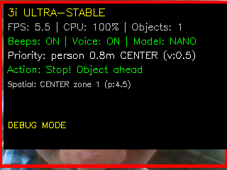

How this started
My high school shut down abruptly in early June 2026. My friends joined another high school. I negotiated with a different one to stay home instead of attending, and I'm enrolled there only so I can write my finals and graduate. The rest goes into my projects, full time, from home, all day, because these needed time and tons of focus for me to learn and build them.
No lab, no mentor, no advisor, no funding, no affiliation to a university, no professor's help. Just me, my laptop, help from LLMs, and rented cloud GPUs when needed. I did this believing that when you want to do something big, you can't take the conventional route everyone took and hope to just be doing it better than the people on it. You have to go unconventional and accept what comes with it.
I've helped my peers get into AI, exposing them to various tools and telling them how capable this stuff is.
Timeline
- March 2026I was building a proof of concept of a “third eye” for visually impaired people: camera detection with distance and voice alerts, with haptic feedback planned. LLMs wrote most of the code. I was also fine-tuning models for physics, using LLMs for the fine-tuning part.
- April 2026I got to know the AI space the way it exists: LLMs, AI agents, workflows, orchestration and APIs.
- May 2026I was having ideas on how we could train models in different ways, and how we could use nature-inspired methods in model architecture. I got to know the physical AI space.
- June 2026Watching NVIDIA GTC Taipei 2026 online ignited my interest in world models, and reading the Cosmos 3 report felt electric. I started working on modular architectures in robotics. Till this point it was mostly intuition and thinking, with negligible math and coding.
- July 2026I started learning the maths.
- August 2026I started learning to code, mostly Python. LLMs still write much of the code in my projects.
- September 2026The actual projects started, from the ideas I’d been having in previous months. I was iterating on them, gaining new ideas and reading papers from alphaXiv.
- October 2026The actual build of these started, the way you see them now. Before that they went through multiple iterations, and some new ideas I didn’t have before started to take root.

Top standout
Learning can make a network worse at learning again. I’m working on the mathematics of why, and how to reverse that wear.
- 960/960 checks passed for the extrapolated small-move law on MNIST networks.
- About 8,000× less measured wear in one controlled small-move experiment, at the same evaluation cost as the comparison method.
- 4% → 46%: recovery of the original weakest kernel eigenvalue after six pairs of target changes, with training outputs restored after each pair.
Why this could matter for continual learning. If we want a network to keep learning, we need to understand how each round changes its ability to learn the next thing. This work gives a mathematical account of one mechanism behind that change, and ways to act on it. If it extends to larger training settings, it could help us design learning rules around their long-term effects.
Read the repoNow
What I’m working on now
I’m working on a problem inside continual learning. A network learns something, then something else, and the learning itself can change how easily it learns the next thing. If we want systems that keep learning over time, we need to understand what is happening there and how much of it comes from the way we train them.
Suppose you change a network’s targets and then bring its training outputs back to exactly where they started. Its weights can still retain a change, and the network can become harder to train. So even when the outputs look the same, something has happened to its ability to learn. My work develops a mathematical framework for predicting that change.
The connection is that many weight settings can give the same training outputs, and where along a step the learner evaluates its gradients helps decide which setting it reaches. In the small-move settings where the scalar law applies, that difference comes down to one number calculated from the update rule. And the same structure connects the solution the network reaches to its predictions on unseen inputs and the changes that accumulate as it keeps learning.
That gives a way to connect questions usually studied separately. Why do different learning rules reach different solutions even when they fit the training data equally? Why does task order matter? How can learning reduce future trainability, and can we reverse that without losing the current training fit?
I derived predictions and tested them on small networks. The broader small-move law passed 960 out of 960 registered checks using extrapolated measurements, and the out-and-back law passed all 36 checks. From the mechanism, I constructed updates that suppress the leading wear at the same evaluation cost as the comparison method. I also demonstrated recovery in a worn network while restoring its training outputs after each pair of target changes.
What makes this interesting to me is that understanding the mechanism gives us a way to design the learning rule around what it leaves behind. But some of that history can also help performance on the next task, so removing wear doesn’t automatically give the best result either.
This is a theory of a particular mechanism within continual learning, and the experiments so far use small fully connected networks on MNIST. It doesn’t yet establish retention of old tasks or solve continual learning at scale. I want to find out how far the framework extends, especially to adaptive optimisers such as Adam and to larger training settings, where being able to predict what learning does to future learning would become much more useful.
By the numbers
- 960/960
- registered checks of one closed-form learning law on MNIST networks
- 65
- attacks I logged against my own claim checker
- 9 of 14
- of my own hypotheses killed by criteria I set in advance
- 171
- physics questions I asked while teaching myself
How I work. The designing, decisions, hypotheses, experimenting and research come from me. Claude Code helps with implementation, stress-testing and rapid iteration. In physics, I asked all 171 questions myself, and Claude was used for citations, formatting and code execution. In the hard-problem paper, Claude was used in reviewing and helping execute tests, and I hold the responsibility for it.
How it connects
How the projects connect
The same few questions run through all fifteen: what a network really keeps, whether a result is real, and what happens when a model’s world changes. Hover a project to see what it links to, and click it to jump to the project.
a link that shows in the results the next experiment
Where others landed too
Some of what I found, others found independently around the same time
- Loops of targets leave a trace in the weights. Sinha & Druga (October 2026) published this first for minimum-norm transport: a closed loop of target outputs moves the parameters in proportion to the loop’s area. In learner-geometry I extend it to other learning rules and to loss of trainability.
- Turning a model's thinking off explains most of a famous weight-edit gain. An independent audit got there a day before my run. I added GSM8K, the remaining 12.2-point gain, and a layer-overlap measure.
- Forgetting is mostly lost access, not erasure. A June 2026 paper found the same on ResNet-18 and CIFAR-100: accuracy fell to 0% while a linear probe kept about 76%. It has no never-trained-task control, the check where my probe readings shrank from 0.59 to 0.04.
- A memory probe needs a baseline. A 15 October paper argues that probe accuracy alone is too permissive, the same point behind my never-trained-task control.
- Lower prediction error doesn't mean better control. Two October 2026 papers report the same gap in JEPA world models: one and two.
- LLM "introspection" by localization may be shallow. Rubin et al., posted on 11 November 2026, after my repo went public, found the injected position is linearly decodable even in randomly initialised networks. They got there by a different route from my salience controls.
- Papers and their code often disagree. A NeurIPS 2026 audit of 87 papers with code found code producing every traced result for only 8% of them. My read of 27 research-agent repos found the same pattern.
- A world model that adapts but keeps what it knew. AFTER, posted on 11 November 2026, after my repos went public, pairs a fast correction with a slow state that only moves on lasting change. It is close in spirit to my before-plus-now gate. It does not test switching the world back.
What I tested that I couldn’t find published
After searching recent papers in November 2026. That is a statement about what I could find, not a claim to be first.
- Switching the world back. I adapted a world model, then silently returned the original world and measured what it still knew. The method’s own paper says: “We do not study sequences of dynamics changes or a return to the training dynamics after adaptation.” The closest designs reset every episode.
- Checking forgetting probes against tasks the network never learned. The general warning that probes can succeed on untrained features exists. I couldn’t find it applied to forgetting, where it shrinks 0.59 to 0.04.
- A sign flip under delay. Replanning every 10 steps instead of 50 added 22.5 points, then cost 14 once a 0.2 s delay was added, found after the fact. Recent delay benchmarks show that horizon and delay interact, not this flip.
A conversation
A researcher in the field called my point on generalisation very interesting
On one of Yacine Mahdid's videos, I argued that the brain never separates inference from training. It keeps predicting the next few milliseconds, and a large error fixes its representations on the fly. It also has to compress lossily. If I had only ever seen brown dogs, the first black dog should erase that criterion and make room for every other kind. Keep a separate model of each dog and the brain's efficiency is gone.
Yacine, a computational neuroscientist who runs the channel Deep Learning with Yacine, replied "very interesting point you are putting together here" and built on it: the brain is made of many independent units, so it can lose a large part of itself and keep learning, which is very hard to reproduce in silico.